This step-by-step tutorial has been done using VirtualBox.
Download the latest release of opennao-vm-<VERSION>.ova from the Aldebaran Robotics’ User or Developer site.
Get VirtualBox on your development machine:
| Step | Action |
|---|---|
Start VirtualBox. 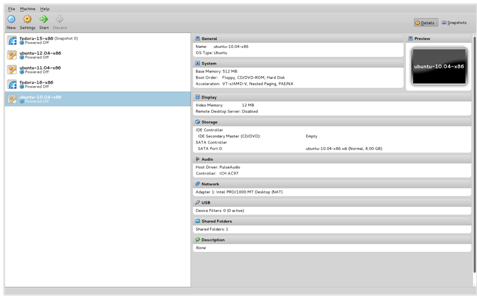If you launch a newly installed VirtualBox, then there is no existing virtual machine in the left column. |
|
In the File menu, click on Import Appliance. The following window is displayed: 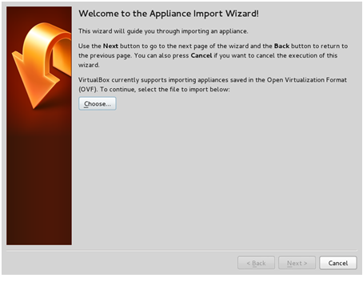 |
|
Browse and open the *.ova file: 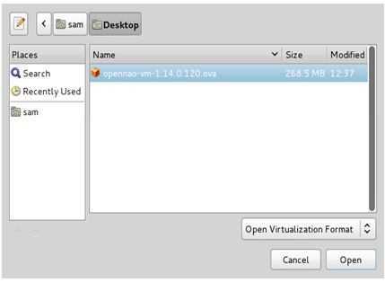The details of the imported virtual machine will be displayed. 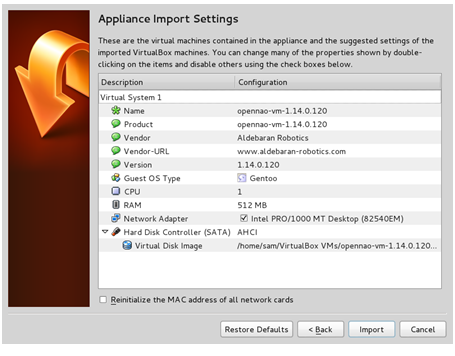 |
|
Click the Import button to start the importation. This may take few minutes, be patient: 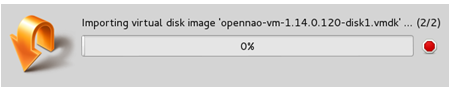Congratulations! The OpenNAO OS virtual machine was successfully imported. 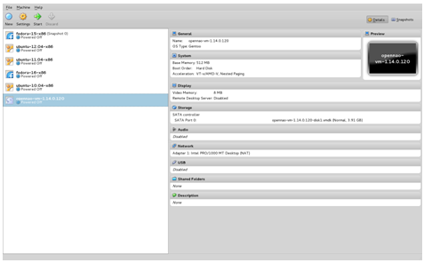 |
| Step | Action |
|---|---|
In VirtualBox, select the OpenNAO virtual machine, then click the Start button. It is launched in its own window: 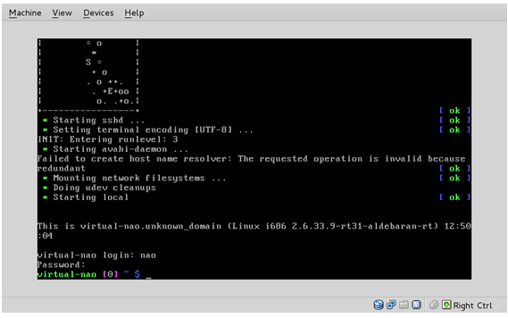 |
|
Here, you are in a console. Refer to OpenNAO user account section for logins and passwords. |
By default, the host port 2222 is forwarded on the ssh port (22) of the OpenNAO virtual machine.
Thus, after launching the OpenNAO virtual machine, one can easily log in over ssh:
From a Linux terminal:
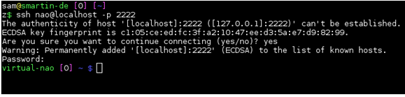From Putty:
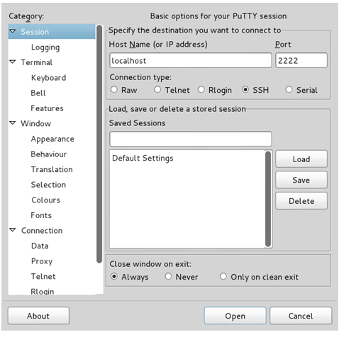Refer to OpenNAO user account section for logins and passwords.
Note
This problem is only addressed using command line tools.
Warning
All the following commands are run on the host system.
On UNIX hosts, use scp.
Sending data from the host to the OpenNAO virtual machine:
scp -P 2222 <source path on the host> nao@localhost:<destination path inside the virtual machine>
Retrieving data from the OpenNAO virtual machine on the host:
scp -P 2222 nao@localhost:<source path inside the virtual machine> <destination path on the host>
On Windows hosts, use pscp, a command line tool, provided within Putty.
Locate the Putty installation directory, assuming it is installed in C:\Program Files\Putty
Start a command window and go to the Putty installation directory:
cd "C:\Program Files\Putty"
pscp -P 2222 source <source path on the host> nao@localhost:<destination path inside the virtual machine>
pscp -P 2222 nao@localhost:<source path inside the virtual machine> <destination path on the hos
Warning
The OpenNAO virtual machine system does not currently include CDrom support.
Thus, installing guest additions is not possible.
By default, the OpenNAO virtual machine network configuration uses NAT.
Using this the OpenNAO virtual machine is reachable, without any knowledge about its network settings, just logging on localhost (see Accessing the OpenNAO virtual machine through ssh).
The port forwarding settings are available under the menu Machine > Settings, then select the Network section (or just click Network on the right column after selecting the right virtual machine).
Expand the advanced features by clicking on Advanced:
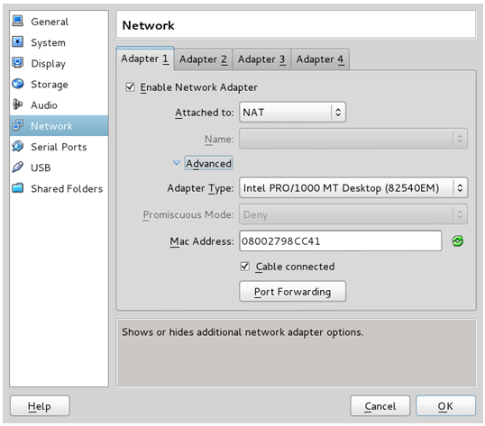Open the port forwarding table:
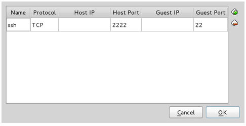From here you can set any redirection you want.
It may be necessary to change the default sub-network on which the OpenNAO virtual machine is connected.
To make this change, there is no other way but command line:
VBoxManage modifyvm <virtual machine name> --natnet1 "<network>/<netmask length>"
Note
This command line must be run when the OpenNAO virtual machine is not running.
Example:
VBoxManage modifyvm opennao-vm --natnet1 "192.168.10.0/24"
If you prefer the OpenNAO virtual machine has its own IP address on the same sub-network as the host is, then you migth be interested by using the bridge network configuration.
To do so, just select Bridged Adapter in the Network configuration window:
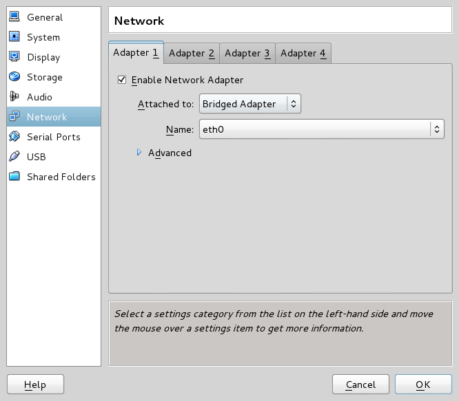Then, the easiest way to know the IP address of the OpenNAO virtual machine is:
Start the OpenNAO virtual machine;
Logging on the OpenNAO virtual machine through the console;
Run the following command:
ifconfig eth0
In the following example, the IP address of the OpenNAO virtual machine is: 10.0.253.196.
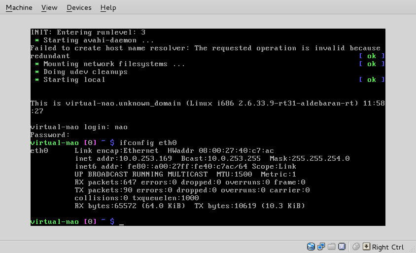